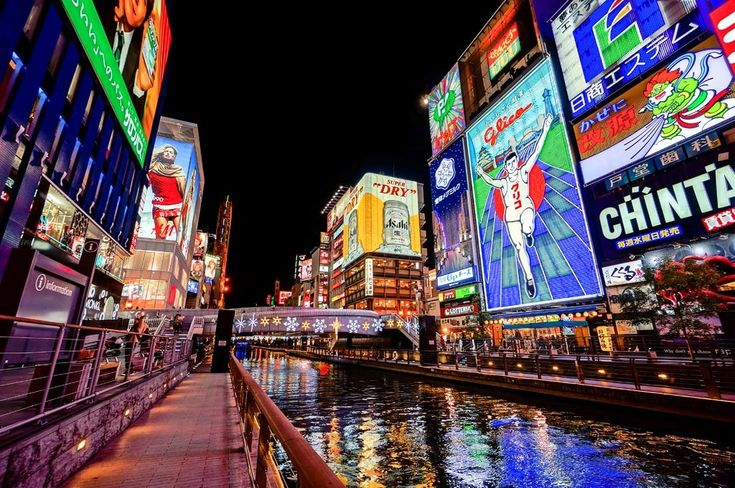
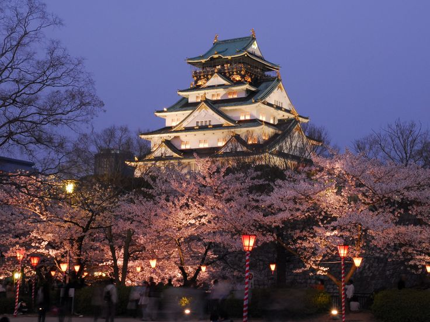
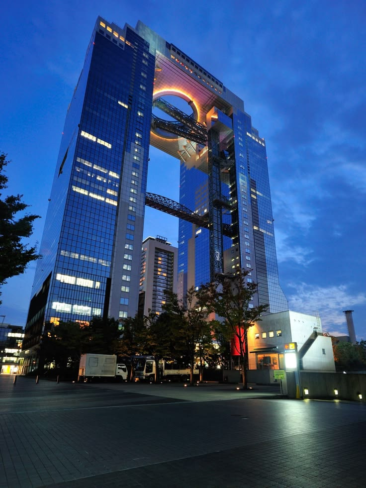
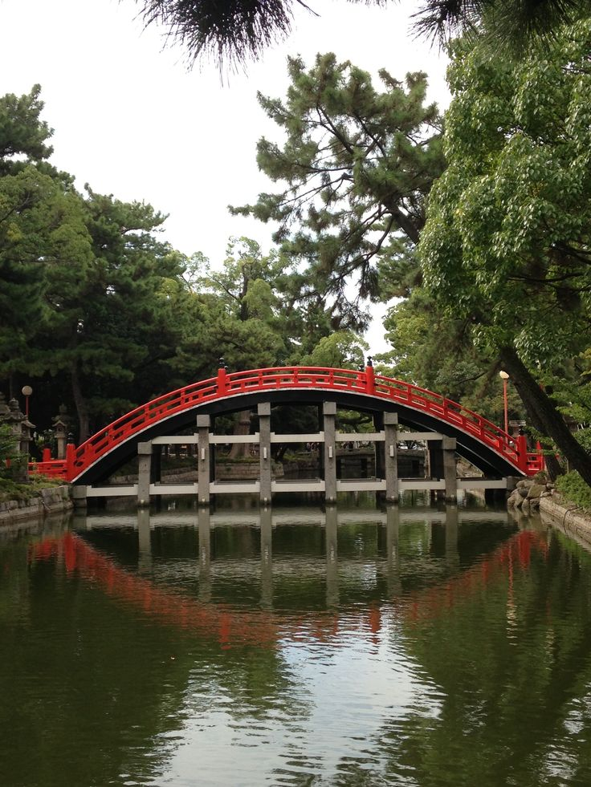
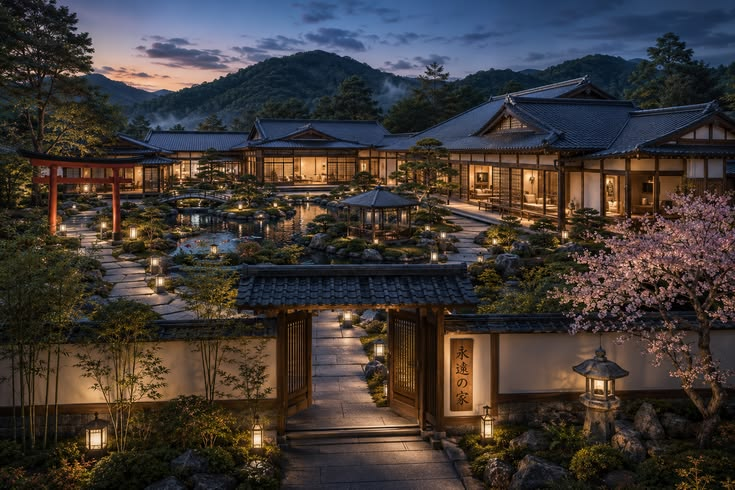

NIGTLIFE CITY
NIGHT DOTONBORI
The absolute heart of Osaka's nightlife.
Osaka is one of Japan’s most vibrant cities, famous for its lively streets, historic landmarks, delicious food, and welcoming atmosphere. From the bright lights of Dotonbori to the historic Osaka Castle,
Explore some of Osaka's most memorable places.

The absolute heart of Osaka's nightlife.

An iconic 16th-century fortress encircled by massive stone walls, a defensive moat, and the expansive Osaka Castle Park

A striking architectural landmark consisting of two futuristic skyscrapers linked at their peaks by the open-air Floating Garden Observatory

One of Japan's oldest and most historically significant Shinto shrines. It predates the introduction of Buddhism to the country and features a stunning, arched red bridge spanning a peaceful pond.
Add unforgettable experiences to your Tokyo journey.
Explor Japanese Osaka Ramen
Discover Osaka's iconic neightlife and vibrant city views.
From vibrant Sapporo to the lavender fields of Furano, Osaka offers a perfect blend of adventure, nature, culture, and relaxation.
Choose a comfortable base for your Tokyo adventure.
Modern rooms with easy access to shopping, restaurants and public transport.

A stylish city stay close to Tokyo's entertainment district.
Create your Tokyo itinerary and start planning your Japanese adventure.